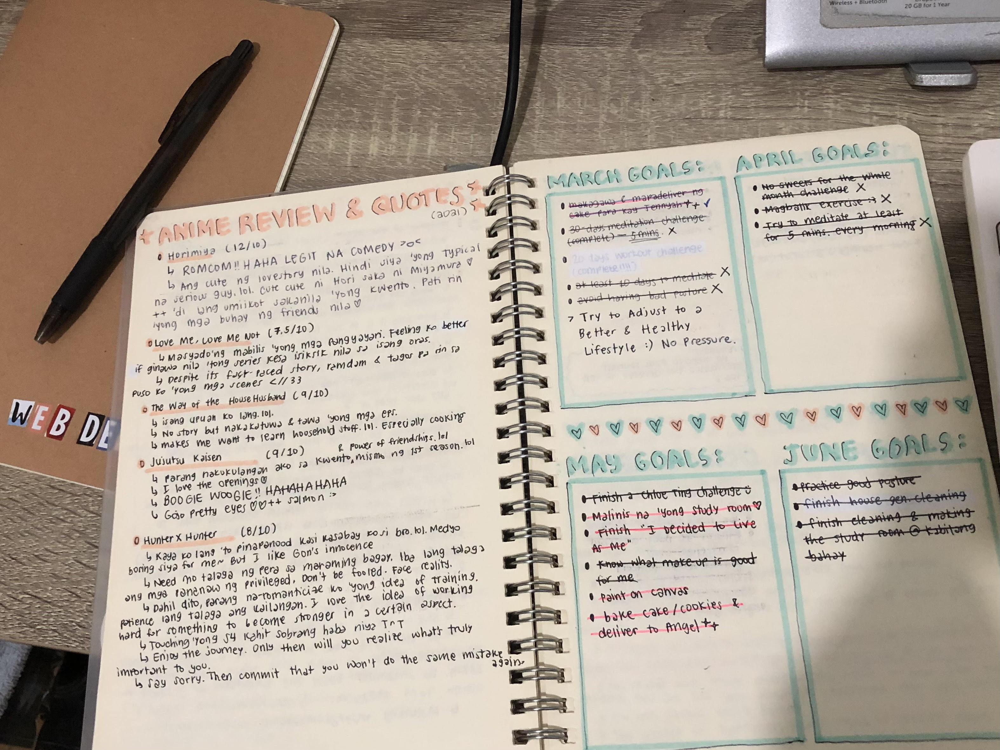
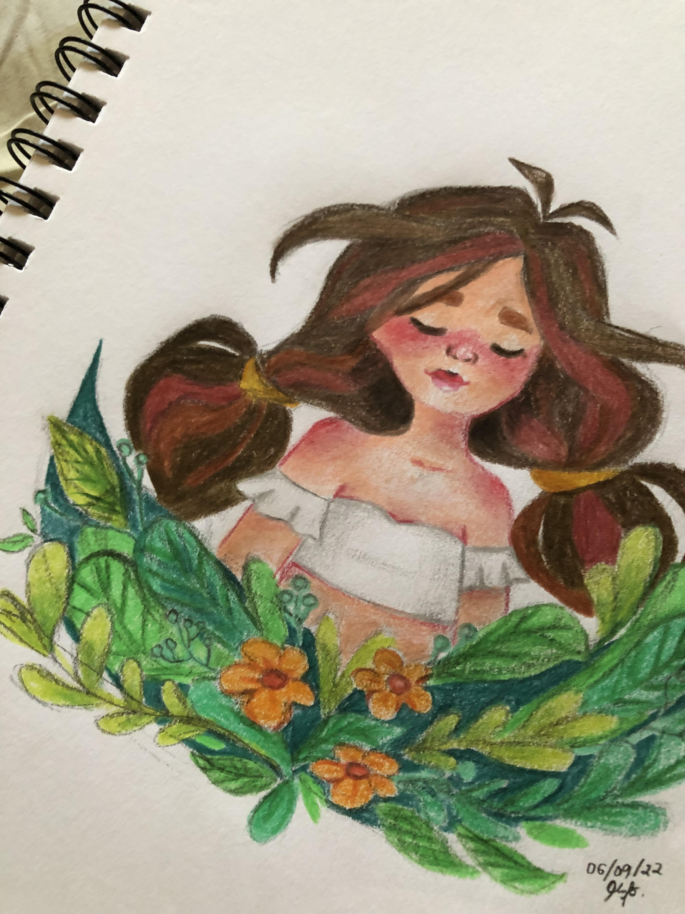
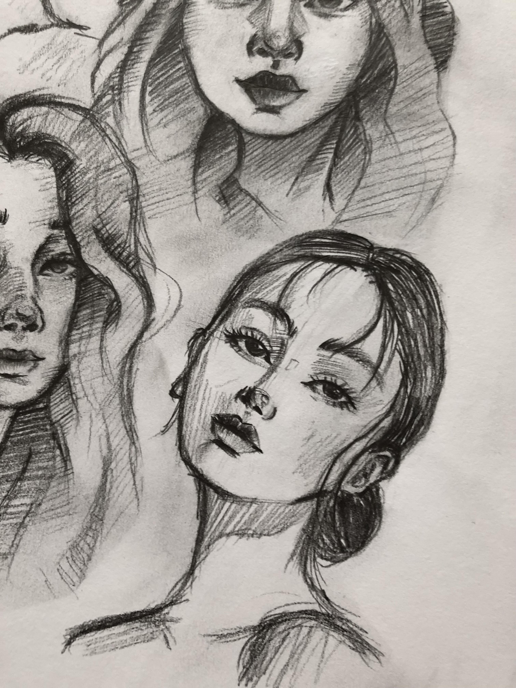

I became a fan of the K-pop group Seventeen during the pandemic. They made my days during the lockdown less suffocating. Click the picture below and you will be able to watch one of their dance practice. You'll see how crazily synchronized they are!

I started exercising because I wanted to have a fit body, but now I just do it for my mental health. If you want to know what video I mostly follow, just click the girl who's exercising :) Since I am also busy with schoolworks, this is only a 10-minute video that you could try from time to time (plus it says beginner friendly :>)

Ugh, Taylor Swift is a queen! I love how she projects herself and her mad confidence on stage. I have been listening to Speak Now (Taylor's version) on repeat these past few days. Click Taylor and listen to one of my current favorite song!

It was also during the pandemic when I started reading webtoons, and I am so blessed that I have discovered the series Odd Girl Out. This is one of my faves because I like Nari's (the main character) personality so much and I also learn from her! If you click the photo below, you'll be redirected to a site where you can try to read this :)

Most of my friends who tasted my cookies asked me which recipe I used. Want to know which site I followed? Just click the clip below :) I like using timelapse when baking because I find it cool to see how the doughs change.
I started writing diaries when I was in 6th grade because of a local movie that was popular during that time. It inspired me to take note daily of what I did and felt during the day. I'm also surprised how I managed to keep it up until now, so currently I have many journals that I could cringe on :P
I mostly reproduce drawings from the internet so don't be amazed too much to see "my" works. The credit mostly belong to the people who post their arts in Pinterest. I don't rely on my imagination (when it comes to drawing) too much. Nevertheless, I enjoy the process of making these :)
 